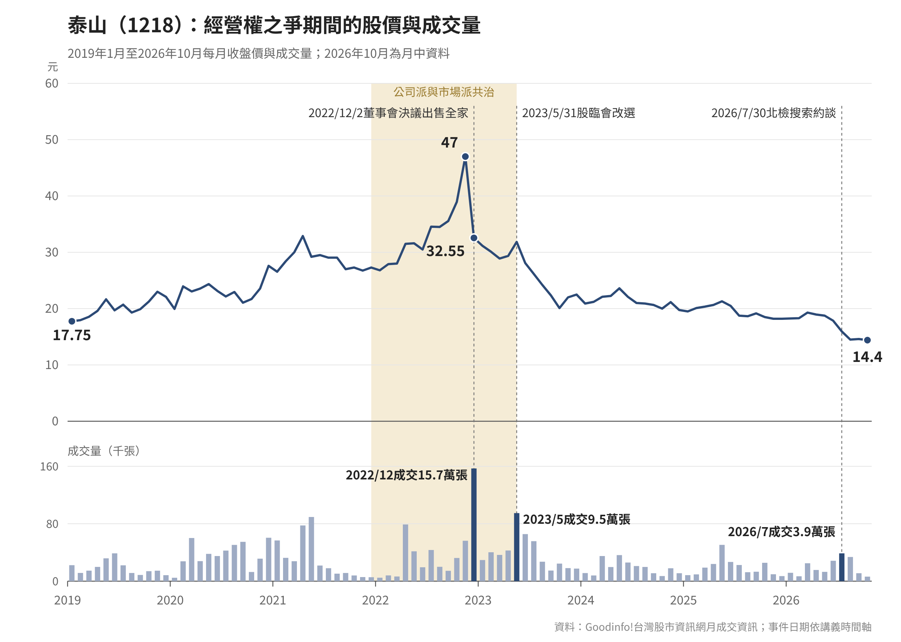

泰山經營權之爭：控制股東資產處分與改選後假處分
案例來源
泰山企業（1218）由詹家於1950年創立，2007年因投資全家便利商店而握有約兩成股權，成為市場覬覦的通路資產。2016年起詹家內部發生多次權力更迭，經營權不穩定，外部資金龍邦集團（大股東朱國榮）趁隙以公開市場收購方式逐步增持，從股東走向共治、最終在2023年取得董事會多數席次，終結詹家73年的家族經營。
【待補充】
這段背景敘述還要再展開：詹家內鬥的具體經過（2016、2017年）、龍邦持股成長曲線（6%→20%→30%以上）的節點細節、與保力達集團退出的關係，都還沒寫。目前先列時間軸骨架，細節之後補。
事件時間軸
- 2016
詹家內部數人聯手，促使2007年上任的董事長詹岳霖辭任，改由詹逸宏接任董事長。（維基百科「泰山企業經營權之爭」）
- 2017
詹家再度內訌，詹晉嘉被迫辭任副董事長。
- 2019
龍邦集團持股超越先前入股的保力達集團，躍升為泰山第一大股東。（工商時報）
- 2021/12
持股32%的龍邦一口氣取得三分之一董事席次，詹景超續任董事長，泰山進入公司派與市場派「共治」時代。
- 2022/12/2
泰山董事會決議處分所持有的全家（5903）股票。
- 2022/12/5
以每股187元、總額約80.97億元，出售全家43,300張股票；開盤63秒內完成交易。龍邦登報質疑詹家「賤賣」股權。（聯合新聞網）
- 2022/12/13
龍邦旗下保勝投資向智慧財產及商業法院聲請「定暫時狀態處分暨緊急處置」，請求禁止泰山執行12月2日董事會通過的全家股份處分案。
- 2022/12/30
龍邦撤回前述假處分聲請。因泰山處分全家股票已於12月5日完成交割，假處分聲請所針對的標的已不存在，法律專家指出這是撤回的原因。（工商時報）
- 2023/1/3
臺灣證券交易所認定泰山公司於處分全家股票一案，取得或處分資產程序未依規定辦理、重大訊息揭露不足，內控程序違失情節重大，處以200萬元違約金。（鉅亨網／Yahoo股市）
- 2023/3/10
泰山公司派向智慧財產及商業法院聲請假處分，法院裁准，禁止泰山於3月16日召集股東臨時會（該次會議原由審計委員會決議召開，擬全面改選董事）。（維基百科）
- 2023/4/25
臺灣證券交易所晚間公告，認定泰山支付寬量國際仲介費8,000萬元、以7,000萬元購入吳冠中畫作、預計購入台開土地等三項交易，顧問合約未逐層簽核、購畫未留存簽核紀錄，違反內部控制制度，對泰山公司處以250萬元違約金。泰山表示不能同意，將向證交所申復。（中央社）、（鉅亨網）
- 2023/5/5
泰山董事會決議以36億元取得街口金融科技40.39%股權，並增建包裝水廠，審計委員會當日僅獨立董事李明輝一人出席、董事會七席僅四席同意。翌日即與第三人簽約，8日給付22億元增資股款。
- 2023/5
臺灣證券交易所認定泰山多次延遲輸入重大訊息、要求補正未果，違反重大訊息處理程序，再對泰山公司處以300萬元違約金。（工商時報）
- 2023/5/22
龍邦旗下保勝投資就街口投資案及包裝水廠案聲請定暫時狀態假處分，智慧財產及商業法院裁准，保勝提供2.1億元擔保後，禁止泰山在雙方訴訟確定前執行該兩項董事會決議。法院認為泰山在決議翌日即簽約、火速給付鉅額股款，可見保勝主張若不禁止執行、將損及全體股東權益一節並非無據；泰山方面則表示將提抗告。（聯合新聞網）、（自由財經）
- 2023/5/29
泰山公司派（原詹家經營團隊）向智慧財產及商業法院聲請假處分，欲禁止龍邦等股東於5月31日召集股東臨時會改選董事，法院裁定駁回，5月31日股臨會依法照常召開。（自由財經）
- 2023/5/31
龍邦與泰山市場派依公司法§173-1（俗稱「大同條款」）召集之股東臨時會如期召開，出席率85.78%，改選結果龍邦取得6席董事中4席、獨立董事3席中1席，原董事長詹景超、董事詹皓鈞雙雙落選，詹家73年家族經營結束。（中央社）
- 2023/6/2
泰山大股東景勛公司（詹家代表）向智慧財產及商業法院聲請假處分，主張5月31日之改選無效，並質疑計票系統當日發生出席股數加總錯誤，要求由原董事繼續行使職務。
- 2023/6/8
新選任董事召開董事會，6名出席董事一致推選龍邦董事長劉偉龍出任泰山董事長。原公司派3席董事未出席，董事會當天因總管理處大門深鎖，在走廊召開。（今周刊）
- 2023/8/15
法院裁定駁回景勛公司前述假處分聲請，改選結果維持有效。（維基百科）
- 2025/5/22
檢方懷疑前董事長詹景超與台開董事長邱于芸共謀炒作泰山股價，並偵辦出售全家持股、未經董事會同意與江油國際簽訂顧問契約、以7,000萬元購買吳冠中名畫等事，涉犯證交法操縱股價、非常規交易及特別背信等罪嫌。檢察官訊後諭知詹景超800萬元、邱于芸100萬元交保。本案尚在偵查階段，應注意無罪推定原則。（中時新聞網）
- 2025/9/10
智慧財產及商業法院就龍邦及保勝投資提起的確認董事會決議無效之訴作成一審判決，認定2022/12/2出售全家股票、2023/5/5投資街口及增建包裝水廠的董事會決議均屬無效。法院認為，詹景超在董事會前已委由寬量國際洽詢潛在買家與價格，決議後僅隔2天就完成交易，隱匿交易對象與條件，違反忠實義務；街口等二案則違反董事會議事規範，原則上決議無效。全案可上訴。（自由財經）、（工商時報）
- 2025/10（判決日期待精確查證）
泰山就證交所2023/4/25處罰的250萬元違約金，向詹景超提起民事求償訴訟，台北地方法院認定詹確有違反內控規定，判其應支付泰山公司250萬元。全案可上訴，尚未確定。（自由財經）、（聯合新聞網）
- 2026/7/30
台北地檢署指揮調查局台北市調處搜索17處地點，約談11名被告及4名證人，偵辦泰山處分全家股票案是否涉及內線交易。被約談者橫跨四任董事長（詹景超、詹仁道、詹仁華、詹岳霖）及時任董事劉偉龍（現任董事長）。檢調懷疑，詹景超在12月2日重訊公告前大量出脫泰山持股，劉偉龍同期則大買泰山股票，兩人利用內線消息做相反方向操作獲利。複訊後，詹仁道與劉偉龍各命50萬元交保並限制出境出海，其餘被約談者訊後請回。此案與2023年證交所對泰山公司的200萬元罰款是不同事件：前者是對公司內控與揭露程序的行政裁罰，本案則是對個人涉嫌內線交易的刑事偵辦。（聯合新聞網）、（今周刊）
- 2026（月份待查）
泰山就證交所2023年5月處罰的300萬元違約金向詹景超求償，台北地方法院、臺灣高等法院均判詹應賠償300萬元，詹上訴後遭最高法院駁回，全案確定。法院認為詹景超身為法定代理人，未督促財務人員依時效發布重大訊息，未盡善良管理人之注意義務。（自由時報）
【待補充】
時間軸目前還缺：（1）每個節點對應的公開資訊觀測站原始公告連結（目前多是新聞報導，需依規則優先查MOPS）；（2）250萬元求償一審判決、300萬元求償最高法院判決的確切日期與案號；（3）證交所300萬元處分的確切日期；（4）2025/9/10判決是否上訴及後續結果；（5）詹景超就2023/5/31股臨會決議提起撤銷之訴的審理進度。
股價與成交量走勢

泰山（1218）2019年1月至2026年10月每月收盤價與成交量，2026年10月為月中資料。資料取自Goodinfo!台灣股市資訊網，正式數字以臺灣證券交易所資料為準。
📈 讀圖提醒
2022年9月到11月，月收盤價從35.55元漲到47元；12月董事會決議出售全家股票，當月收盤跌到32.55元，成交15.7萬張，是圖中成交量最高的月份。2023年5月股臨會改選當月成交9.5萬張，之後股價逐步回落。2026年7月月收盤15.95元，8月再降到14.5元。
股價同時受大盤、產業景氣與公司營運影響，圖上標註的事件只是對照時間點，不能單憑走勢推論事件與股價之間的因果關係。
引導討論
2025/9/10智慧財產及商業法院一審判決（可上訴）認定，詹景超在董事會前已委由寬量國際洽詢潛在買家與價格，決議後僅隔2天就完成交易，隱匿交易對象與條件，違反公司法§23的忠實義務，2022/12/2出售全家股票的董事會決議因此無效。
追究責任還有另一條路徑：公司向負責人求償。公司法§23第1項規定，公司負責人應忠實執行業務並盡善良管理人之注意義務，違反致公司受有損害者，負損害賠償責任。泰山就證交所開罰的兩筆違約金向詹景超求償，300萬元部分已經最高法院駁回上訴確定，250萬元部分一審判賠、尚未確定。前者處理的是「決議效力」，後者處理的是「損害賠償」，兩者法律效果不同。
【待補充：對應§185讓與主要部分財產的股東會特別決議門檻是否適用於本案全家股票處分，需查證「主要部分」認定標準（經濟部函釋）與董事會決議程序後才能完整寫入。】
🤔 延伸思考（待補充）
【待補充】
泰山案的假處分攻防前後共出現五次，結果各不相同，很適合拿來對照「保全必要性」的判斷標準：
・2022/12龍邦聲請禁止處分全家股票：因交割已完成、標的已不存在，龍邦自行撤回
・2023/3公司派聲請禁止3/16股臨會：法院裁准，會議未能如期召開
・2023/5龍邦聲請禁止執行街口投資案：法院裁准，理由是泰山已在決議翌日即簽約、火速給付鉅額股款，若不禁止將損及全體股東權益，此外泰山未能舉證禁止執行會使其受有何等損失，法院因此權衡雙方可能受到的損害後准許
・2023/5公司派聲請禁止5/31股臨會：法院裁定駁回，會議依法照常召開
・2023/6景勛公司聲請5/31改選無效：2023/8/15遭法院駁回
這五次聲請都向智慧財產及商業法院提出，適用商業事件審理法§64：聲請人必須釋明爭執的法律關係，以及防止發生重大損害或避免急迫危險的必要性，釋明不足時法院應駁回，不能以供擔保補足。法院審查時會權衡聲請人將來勝訴的可能性、准許或駁回對雙方是否造成難以彌補的損害，以及對公眾利益的影響，並非誰先聲請、誰聲量大就會准許。
要注意假處分只是暫時性的保全程序，決議效力最後要靠本案訴訟確定。董事會決議有瑕疵，可以提起確認決議無效之訴，例如2025/9/10的判決；股東會的召集程序或決議方法違反法令或章程，股東則可依公司法§189，自決議之日起30日內訴請法院撤銷。據報導，詹景超已就2023/5/31股臨會決議提起撤銷之訴，最高法院發回更審，結果尚待追蹤。（INSIDE）
🤔 延伸思考（待補充）
【待補充：同樣是假處分工具，中工案是市場派用來保全提名權，泰山案是原公司派用來挑戰已生效的改選結果，兩者聲請的正當性基礎有何不同？】
【待補充：對應證交法§171第1項第2款非常規交易罪、第3款特別背信罪的構成要件，需查證檢方起訴或後續司法認定進度，目前僅到交保階段，尚未經判決確定，論述時須注意無罪推定原則。】
證交法§157-1規範的是「獲悉重大消息後，在消息公開前買入或賣出」，並未限定特定交易方向。本案檢調懷疑的正是舊經營團隊（詹景超）在12月2日董事會決議處分全家股票的重訊公告前大量賣出泰山股票，而新任董事劉偉龍同期則反向大量買進，若查證屬實，兩人可能各自基於同一則內線消息成立§157-1的內線交易罪，賣方與買方並不互相排斥。【待補充：本案尚在偵辦階段，尚未經起訴或判決，論述應注意無罪推定原則，後續應追蹤起訴書內容確認具體交易時點與獲悉消息之時點是否吻合。】
🤔 延伸思考（待補充）
【待補充：舊經營團隊賣股與新任董事買股，時間點橫跨改選前後，「獲悉消息」與「身分轉換」之間的因果關係如何認定，是否會因經營權交接而產生舉證上的特殊困難？】
課堂討論方向
- 【待補充：比較泰山案與中工案在「家族治理失靈」與「單次股東會攻防」兩種經營權爭奪模式上的異同。】
- 【待補充：全家股權處分是否構成§185「讓與主要部分財產」，若成立，董事會逕行決議而未經股東會特別決議的法律效果為何？】
- 【待補充：同一項假處分工具，用在保全提名權與挑戰已生效決議兩種情境，法院審查密度是否應該不同？】
本教材為教學目的整理，內容依公開新聞報導彙整而成，不代表本課程對任一方之立場評價。案例分析僅供課堂討論使用，實際法律爭議應以正式裁判文書及專業法律諮詢為準。部分時間軸細節與法律爭點論述尚在補充中。